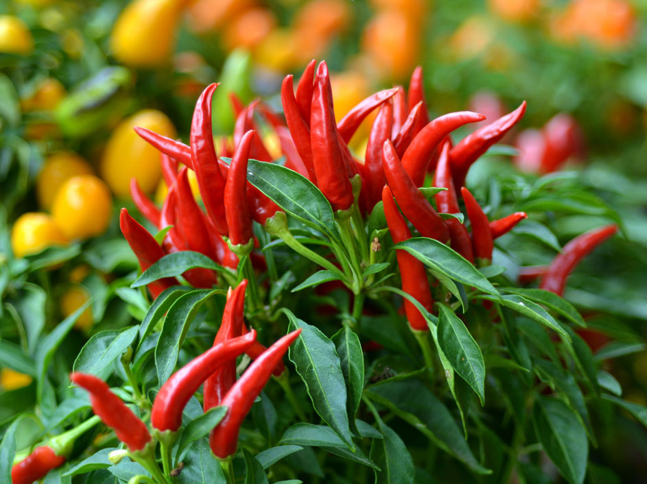

Bird’s Eye Chili, also known as chili padi, is a small but very spicy chili commonly used in Southeast Asian cooking. It grows well in warm climates and is suitable for pots, balconies, and home gardens.
Needs 6–8 hours of direct sunlight daily for strong growth and fruit production.
Water regularly to keep soil moist but not soggy. Avoid overwatering.
Best growth at 25°C – 35°C. Thrives in hot and humid conditions.
Use fertile, well-draining soil rich in organic matter.
Harvest when chilies turn green, red, or desired color. Regular picking encourages more growth.
Used in spicy dishes, sambal, sauces, cooking, and food seasoning
Cause: Overwatering or nutrient deficiency.
Solution: Adjust watering and add fertilizer.
Cause: High temperature or inconsistent watering.
Solution: Maintain stable watering and reduce heat stress.
Cause: Pests or viral infection.
Solution: Remove affected leaves and control pests.
Cause: Common pests feeding on plant sap.
Solution: Use mild soap spray or natural pesticide.
Cause: Lack of sunlight or poor soil nutrients.
Solution: Provide full sunlight and add compost.